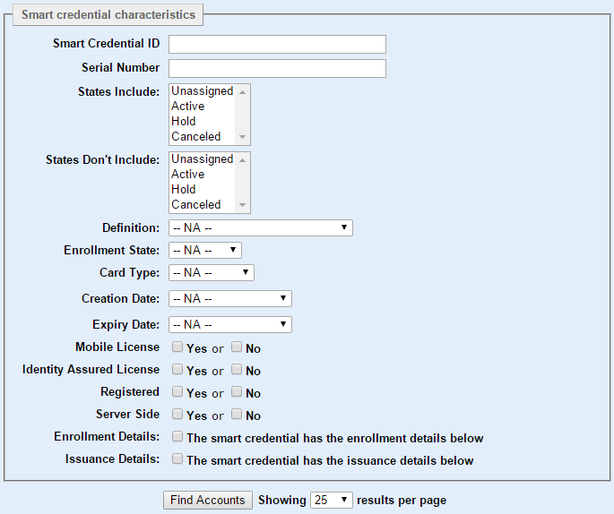
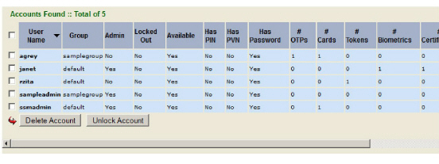

|
IdentityGuard Server 12.0 Administration Guide |
|
IdentityGuard Server 12.0 Administration Guide |
To find users by smart credential
1. Log in to the Administration interface
2. In the main menu, click User Accounts.
The User Accounts page appears.

3. Click the Find Accounts tab.
4. Specify as many of the search options as necessary to reduce the search results to the exact records you need.
5. To find users with certificates, select Has a smart credential with the characteristics below.
6. The Smart credential characteristics pane appears.

7. To find users by their smart credential ID, enter the ID in Smart Credential ID.
8. To find users by their smart credential serial number, enter the serial number in Serial Number.
9. To find users by their smart credential states, select the smart credential states from the States Include and States Don’t Include lists. For more information on states, see “Assigned (user) smart credential states” in the Entrust IdentityGuard Smart Credentials Guide.
10. To find users by their smart credential definition, select one of the existing definitions from the Definition drop-down list.
11. To find users by their smart credential enrollment state, select one of the states from the Enrollment state drop-down list:
● Enrolling. A smart credential is in this state as soon as all required enrollment data is collected. The smart credential then automatically moves to the Enrolled state.
● Enrolled. A smart credential is in this state when a new smart credential enrollment has been submitted, but is not yet approved.
Note: If you are not using the approval feature, the smart credential is automatically approved upon submission and moves to the Approved state.
● Approved. A smart credential is in this state when the administrative user with the Smart Credential Approver role (or equivalent permissions) approves the smart credential record.
● Sealed. Optional. A smart credential is in this state when the administrator manually clicks Seal after printing and/or encoding. Generally, this occurs just before distributing the smart credential to the employee. This seals the record in the database so that it cannot be edited, reprinted, or re-encoded.
12. To find users by their smart credential card type or mobile device brand, select one of the states from the Card Type drop-down list. Options include:
– Android, Apple iOS and BlackBerry devices for software mobile smart credentials
– Infineon, NXP, or Unknown for physical smart cards
13. To find users by the date their smart credential was created, select a time frame from the Creation Date drop-down list.
If you select Custom date range, choose a date range from the From and To drop-down lists (day, month, year), or click the calendar icons to select dates.
14. To find users by the expiry date of their smart credential, select a time frame from the Expiry Date drop-down list.
If you select Custom date range, choose a date range from the From and To drop-down lists (day, month, year), or click the calendar icons to select dates.
15. To find users by whether or not they have a mobile smart credentials license, next to Mobile License, select Yes if the user has a mobile smart credential and uses a mobile smart credentials license, or No if it they do not.
16. To find users by whether or not they have a mobile smart credential that is licensed to use the Identity Assured features, next to Identity Assured License, select Yes if the user uses the identity assured features on their mobile smart credential, or No if they do not.
17. To find users by whether or not they have smart credentials that are registered with Entrust IdentityGuard, next to Registered, select Yes. For more information about registered and server-side credentials, see the Entrust TruePass to Entrust IdentityGuard Migration Guide.
18. To find users by whether or not they have server-side smart credentials, next to Server Side, select Yes. For more information about registered and server-side credentials, see the Entrust TruePass to Entrust IdentityGuard Migration Guide.
19. To find users by enrollment details, select the Enrollment Details check box. Complete one of more of the fields that appear. The fields that appear are dynamic, and based on the definition or definitions configured in IdentityGuard.
20. To find users by enrollment details, select the Issuance Details check box. Select one of more of the following options:
● Issuance Status Includes: The options provided are based on your Print Module configuration. For more information on issuance status, see the Entrust IdentityGuard Print Module User Guide.
● Issuance Status Doesn’t Include: The options provided are based on your Print Module configuration. For more information on issuance status, see the Entrust IdentityGuard Print Module User Guide.
● To find users by the date their smart credential was issued, select an issuance time frame from the Issuance Date drop-down list.
If you select Custom date range, choose a date range from the From and To drop-down lists (day, month, year), or click the calendar icons to select dates.
21. To specify how many search results are displayed per page, select a number from the Showing results per page drop-down list.
22. Click Find Accounts.
The Search Results page displays all users that match your search criteria.
Note: You
can change the sort order of records in the Search
Results page. Click any column header to sort records by the
values in that column.
Only the entries on the current page are sorted; if there are multiple
pages of search results, only the one you are viewing is sorted.
